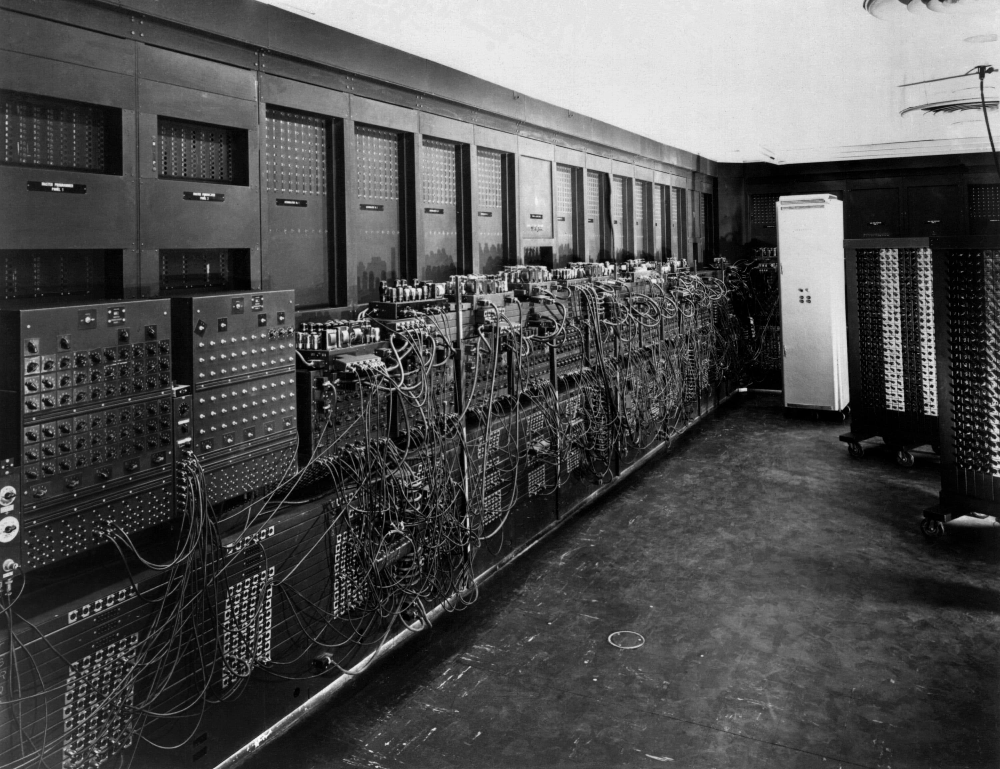
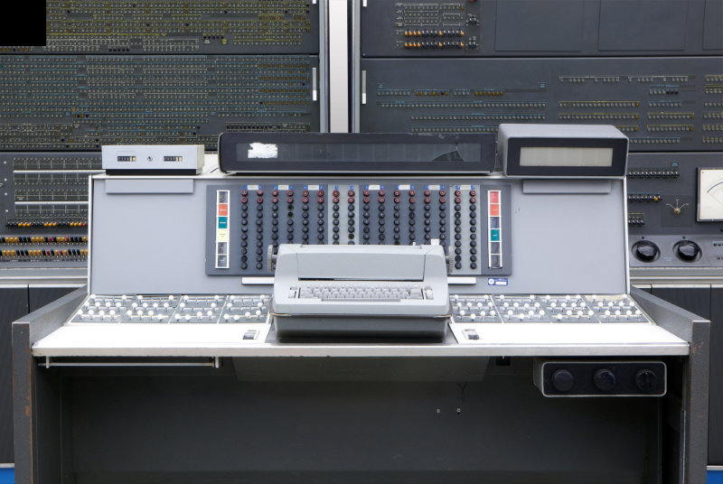
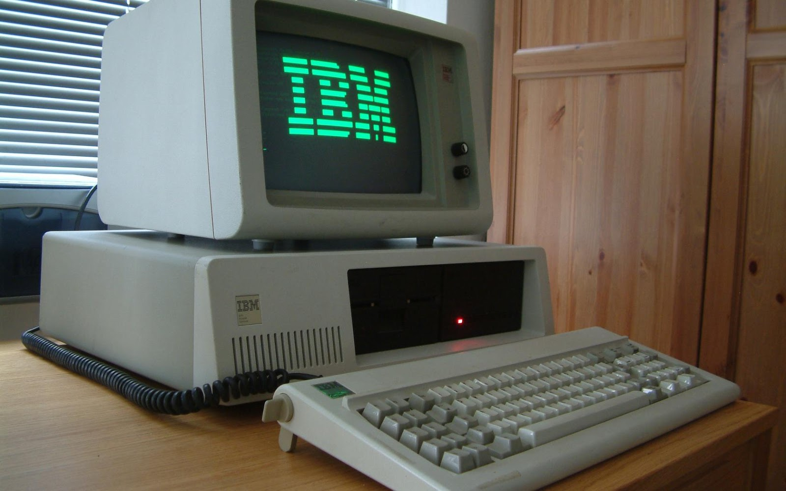
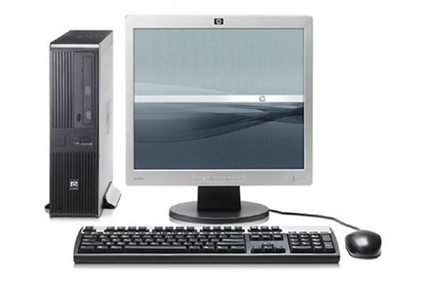
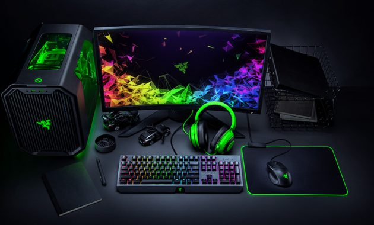

Komputer pertama kali ditemukan pada 1822 oleh seorang ahli matematika asal Inggris, Charles Babbage. Mulanya, Babbage bermaksud untuk menciptakan sebuah mesin hitung bertenaga uap yang dapat menghitung tabel angka. Mesin tersebut kemudian ia beri nama "Difference Engine 0" dan digadang-gadang sebagai komputer pertama di dunia. Bentuk Difference Engine 0 sendiri sangat jauh berbeda dari kebanyakan model komputer modern saat ini. Meski demikian, prinsip kerja yang dimiliki mesin tersebut sama seperti komputer modern, yakni mampu melakukan penghitungan angka alias komputasi. Hingga pada 1890, seorang penemu bernama Herman Hollerith merancang sebuah sistem kartu yang mampu menghitung hasil sensus AS yang dilakukan pada 1880. Berkat inovasi tersebut, Hollerith berhasil menghemat anggaran pemerintah sebanyak 5 juta dollar AS. Selanjutnya, Hollerith terus mengembangkan potensinya di ranah teknologi hingga akhirnya sukses mendirikan perusahaan komputer IBM.
Komputer generasi pertama memiliki ciri-ciri utama yakni ukuran fisiknya yang besar. Karena ukuran fisiknya yang besar itulah maka memerlukan daya listrik yang besar juga. Adapun komponen yang digunakan adalah berupa tabung hampa udara. Programnya dibuat dalam bahasa mesin yang menggunakan konsep storage program. Data dapat disimpan di magnetic tape dan magnetic disk.
Komputer di generasi kedua menggunakan komponen berupa transistor yang lebih kecil daripada tabung hampa udara. Meski begitu, kapasitas memori utamanya cukup besar dengan proses operasi yang lebih cepat. Selain itu, komputer di generasi kedua juga sudah memiliki kemampuan proses real-time, dan time sharing. Perkembangan lain dari komputer generasi pertama ke generasi kedua terletak pada magnetic disk dan magnetic tape-nya yang sudah berbentuk removable disk.
Komputer di generasi ketiga sudah memiliki ukuran yang lebih kecil karena menggunakan komponen IV (Integrated Circuits) sehingga hemat penggunaan listrik. Proses operasinya juga berjalan lebih cepat dan tepat dengan kapasitas memori yang jauh lebih besar. Magnetic disk yang digunakan memiliki sifat random access. Komputer di generasi ini juga sudah dapat melakukan multiprogramming dan multiprocessing, serta dapat melakukan komunikasi data antar komputer. Alat input dan output-nya juga semakin canggih dengan menggunakan visual display terminal.
Personal Computer (PC) sudah mulai berkembang di generasi ini, contoh produknya adalah Apple II. Memori komputernya sudah menggunakan bentuk chip dari mikroprosesor dan semikonduktor dengan teknologi Large Scale Integration (LSI) yang juga disebut dengan Bipolar Large Scale Integration.
Komputer generasi kelima dipelopori oleh negara Jepang. Telah menggunakan Very Large Scale Integration dan Artificial Intelligence supaya komputer dapat memecahkan masalah sendiri. Selain itu, komputer pada generasi ini juga mempunyai jutaan warna dengan resolusi yang sangat tajam. Lalu, perkembangan teknologi komputer generasi kelima juga memungkinkan untuk dibuat jenis komputer portabel alias laptop.
